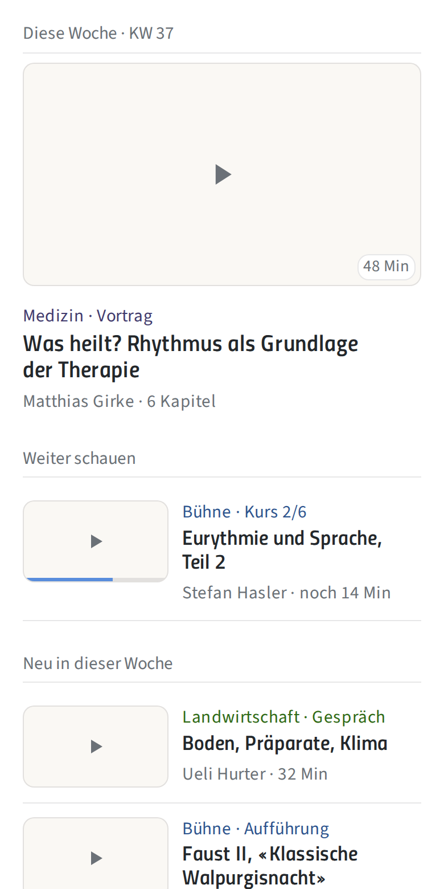
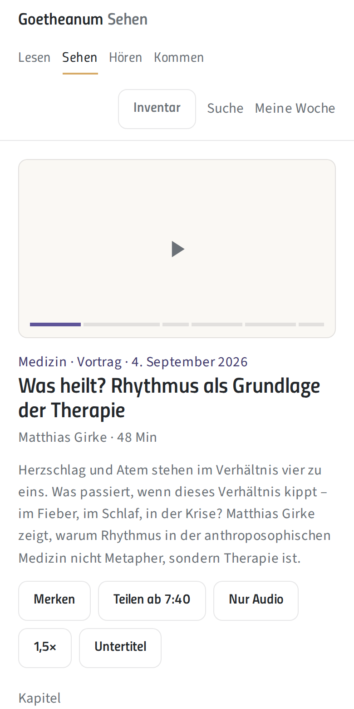

Weniger zeigen. Mehr sehen.
Wie die neue Videoplattform des Goetheanum genutzt werden will – und warum wir die Nutzerführung radikal vereinfachen. Zehn Erkenntnisse aus Studien und Vergleichsfällen, das Wireframe, das Inventar, die Architektur.
Notizen
Die Plattform ersetzt Uscreen durch eigene Software auf Mux. Die erste Aufgabe war ein überzeugendes, einfaches UI. Diese Seite fasst Recherche und Entwurfsentscheide zusammen.
Drei Aufgaben, ein Entwurf
Der Entwurf muss alle drei zugleich lösen. Die Nutzerführung entscheidet, ob die Plattform als Bildungsangebot gelesen wird oder als weiterer Streamingdienst.
Uscreen ablösen
Eigene Software auf Mux: Player, Backend, Abo, Newsletter in unserer Hand. Kein Drittanbieter mehr zwischen uns und den Abonnenten.
Von «TV» zu Bildung
«TV» verspricht Unterhaltung. Die Plattform soll Einblick geben: Wissenschaft, Kunst, Anthroposophie, Tagungen. Der Name folgt dem Anspruch.
Ein Ökosystem
Video, Wochenschrift und Newsletter wachsen zusammen. Essays und Videos verweisen aufeinander; ein wöchentlicher Überblick bündelt alles.
Notizen
Der Entwurf muss alle drei Aufgaben zugleich lösen. Die Nutzerführung entscheidet, ob die Plattform als Bildungsangebot gelesen wird oder als weiterer Streamingdienst.
Ein Bild. Vier Zeilen. Eine Woche.
Radikale Vereinfachung ist keine Sparmassnahme. Sie ist das, was die Forschung zu Aufmerksamkeit, Auswahl und Rückkehr seit Jahren nahelegt – und was die grossen Plattformen gerade selbst nachvollziehen.
Ein Cover-Format. Ein Standbild 16:9 aus dem Video, ohne Text im Bild.
Vier Textelemente. Feld · Format, Titel, Person, Dauer. Nicht mehr.
Keine Banner, kein Karussell. Ein redaktionell gesetztes Wochen-Video statt Wechselbilder.
Die Woche als Takt. Wie die Wochenschrift: «KW 37» ist das Ordnungsprinzip.
Transkript als Rückgrat. Kapitel, Suche, Verweise auf Essays – alles aus dem Text.
Zu viel Auswahl lähmt
Notizen
YouTube hat 2024/25 ein Desktop-Redesign mit weniger, grösseren Thumbnails getestet und im September 2026 bestätigt, dass das Engagement mit Langform-Videos gestiegen ist, obwohl weniger Videos sichtbar sind. Stärkste aktuelle Bestätigung der These.
Das Bild entscheidet – in 1,8 Sekunden
Notizen
Netflix hat die Artwork-Forschung 2016 publiziert. Konsequenz: Das Standbild ist das wichtigste Element, aber es muss nicht produziert werden. Ein guter Frame aus der Aufzeichnung reicht.
Karussells werden übersprungen
Hero-Karussell
Nutzer scrollen sofort an grossen Wechselbildern vorbei und sehen alles ausser dem ersten Frame nie. Klicks auf Folge-Slides liegen im Promillebereich. Und: Das Karussell zwingt zu Key-Art im Querformat – Produktionsaufwand für jedes Video.
Diese Woche
Was heilt? Rhythmus als Grundlage der Therapie
Ein Video, redaktionell gesetzt, eine Woche lang stabil. Dieselbe Position im Newsletter und auf Social Media.
Notizen
Nielsen Norman Group und mehrere Feldstudien zeigen seit Jahren: Karussells werden ignoriert oder als Werbung gelesen. Das statische Wochen-Video ist zugleich Ankerpunkt für Newsletter und Social Media.
Der Wochenrhythmus bringt zurück. Die Technik hält.
Unser Publikum denkt in Mediatheken, nicht in Netflix
Notizen
Bei 50- bis 69-Jährigen sind die Mediatheken auf Augenhöhe mit YouTube. Die ARD-Mediathek-Konzeption arbeitete mit zwei Zielbildern – «Streamer-Feel» für Jüngere, «erweitertes TV-Erlebnis» für Ältere – und liess Inhalte direkt aus der Übersicht starten. ARTE: acht Themenkategorien, «Mein Arte» mit abonnierbaren Formaten.
Audio ist der zweite Hauptmodus
Was die Bildungs-Streamer lehren
Gaia
Spiritualität, Bewusstsein, Dokumentation. 8000 Titel, 13,99 $/Monat oder 119 $/Jahr, Gaia+ 299 $/Jahr mit Live-Events. Zieht sich 2026 von Drittplattformen zurück: Deren Abonnenten hatten höheren Churn, tiefere ARPU – und Gaia wusste nicht, wer sie sind.
Nebula
Grösster kreativ-eigener Dienst, rund 680 000 Abonnenten, 6 $/Monat oder 60 $/Jahr. Argumente: werbefrei, Offline-Downloads, Frühzugang, Bonusmaterial.
MasterClass
Prominente Lehrer, Kino-Produktion. Kämpft mit Churn bis 52 % im Konsumentengeschäft; gehalten durch B2B-Lizenzen und häufige «Hero»-Veröffentlichungen.
Notizen
Gaia (NASDAQ: GAIA) ist uns inhaltlich am nächsten. Ihre Strategieänderung vom Mai 2026 ist unser Uscreen-Argument: die Beziehung zum Abonnenten selbst besitzen. CuriosityStream hält über 85 % der Direktabonnenten auf Jahresplänen – entsprechend tiefer Churn. Ein Rückhol-Newsletter für Ex-Abonnenten gehört in die Architektur, nicht in eine Kampagne.
Der nächste Verwandte: die ZEIT Akademie
Ein Wochenblatt mit einer Videoplattform – das ist unsere Lage, nicht die von Netflix. Zahlen von ihrer Startseite, ausgezählt am 16. September 2026.
Die Einheit ist die Reihe, nicht das Video
Eine Karte trägt vier Textelemente: Titel, eine Zeile wer und was
, die Gesamtdauer in Minuten und die Zahl der Lektionen. 318 Minuten · 53 Lektionen sagt in zwei Zahlen, wie gross die Sache ist und in wie vielen Bissen sie kommt.
Ein einzelnes Gespräch ist derselbe Gegenstand mit 1 Lektion
. Webinar, Kurs, Lernpfad – eine Form für alles.
Varianten als eigene Einträge
Dieselbe Sache steht mehrfach im Katalog: Philosophie
und Philosophie (Audio)
, Kreativität
und Creativity
, dazu Trailer, Kundenfassungen und ein Lernpfad Konfliktmanagement alt
.
Die Ursache ist nicht Nachlässigkeit, sondern das Datenmodell: wo eine Variante ein Produkt ist, wird sie ein Eintrag. Der Katalog wächst dann um Dubletten statt um Inhalt.
Bester Preis.
Notizen
Die ZEIT Akademie nennt sich Die Streamingplattform des Wissens
und erklärt sich in drei Säulen zu je drei Zeilen – neun Zeilen für das ganze Angebot. Kein Hero-Karussell, ein statischer Anspruch und ein Knopf.
Zwei Stellen, an denen wir weiter gehen. Erstens das Transkript: ihre häufigen Fragen sagen Alle Kurse verfügen über deutsche Untertitel und Transkripte. So können Sie die Inhalte auch ohne Ton verfolgen.
– das Transkript ist dort eine Zugänglichkeitsfunktion, bei uns ist es der Motor für Suche, Kapitel und die Verbindung zu den Essays. Zweitens das Begleitmaterial: zu jedem Kurs produzieren sie ein E-Book. Unser Gegenstück ist der Essay aus der Wochenschrift – den haben wir schon, wir müssen ihn nur verknüpfen.
Ihre Kategorien sind sechs Tätigkeits- und Lebensworte, unsere Felder sind die Sektionen der Hochschule. Bei Medizin, Landwirtschaft oder Pädagogik deckt sich beides; bei Allgemeine Anthroposophische Sektion
nicht. Das ist eine offene Frage, keine Entscheidung.
Die Plattform ist nur aus Deutschland erreichbar – Österreich, die Schweiz und Liechtenstein sind ausgeschlossen. Für uns keine Option.
Startseite: die Woche, dann die Liste
Der Prototyp läuft hier eingebettet. «Inventar» beschriftet jedes Element mit seiner Rolle – dieselbe Zählung wie im Kapitel Inventar.

Ein Wochen-Video. Gross, statisch, redaktionell gesetzt. Kein Karussell. Dieselbe Position wie im Newsletter.
Zeilen statt Kacheln. Standbild links, Text rechts, Trennlinie. Drei bis vier Einträge «Neu» – nicht dreissig.
Weiter schauen. Fortschrittsbalken auf dem Standbild. Der wichtigste Grund, wiederzukommen.
Felder = Sektionen. Medizin, Landwirtschaft, Pädagogik, Bühne … mit den Sektionsfarben aus dem Design-System.
Dazu lesen. Ein bis zwei Essays der aktuellen Wochenschrift, als Textzeile ohne Bild.
Notizen
Keine Kategorie-Banner, keine Werbeflächen. Hinweise auf weitere Goetheanum-Angebote kommen als Textzeile im Newsletter, nicht als Banner auf der Plattform.
Videoseite: Player, Kapitel, Transkript, Verweise
Auf dem Schreibtisch liegt die rechte Spalte neben dem Player. Die weiteren Seitentypen zeigen dasselbe Zeilenprinzip.

Player zuerst, schnell. Mux-Player, Start unter zwei Sekunden. Kapitelmarken direkt im Zeitstrahl.
Vier Handlungen. Merken, Teilen ab Zeitmarke, Nur Audio, Tempo. Dazu Untertitel und Cast im Player.
Kapitel und Transkript. Automatisch aus Mux, redaktionell geprüft. Ein Klick auf den Satz springt zur Stelle.
Dazu lesen. Der Essay aus der Wochenschrift – aus derselben Datenbank, kein manuelles Verlinken.
Aus derselben Reihe. Die nächste Folge, die Tagung, dieselbe Person. Wenige, klare Nachbarn.
Was es wirklich braucht
Alles, was Text ist, bleibt Text im HTML: durchsuchbar, übersetzbar, änderbar. Nichts wird in Bilder eingebrannt.
Was wegfällt
- Key-Art pro Video
- Teasertexte in Listen
- Kategorie-Banner
- Autoplay-Vorschau
- Bewertungssterne
- Tag-Wolken
- «Empfohlen für dich» in der ersten Woche
- Zweitausgaben für Audio und Sprache
Was dazukommt
- Kapitel und Transkript
- Nur Audio mit Hintergrundwiedergabe
- Cast
- Offline
- Weiter schauen
- Live-Marker bei Tagungen
- Frühzugang für Abonnenten
Eine Datenbank, drei Ansichten
Die Sektionen sind das Rückgrat. Video und Essay hängen an denselben Entitäten – «Dazu lesen» ist eine Abfrage, keine Redaktionsarbeit.
Supabase – eine Quelle für alles
Feld ist die Sektion, Reihe auch eine Tagung. Acht Entitäten, mehr braucht es nicht. Nur Audio, Untertitel und Sprache sind Eigenschaften eines Videos – wo eine Variante zur Entität wird, wächst der Katalog um Dubletten statt um Inhalt (Erkenntnis 10).
Sehen
Videoplattform
Lesen
Wochenschrift-Website
Meine Woche
Newsletter, freitags, personalisiert
Der Newsletter fasst die bisherigen Aussendungen zusammen: ein wöchentlicher Überblick über neue Texte und Videos nach gewählten Feldern, ergänzt um Hinweise auf Tagungen und weitere Angebote – als Abfrage derselben Datenbank. Segmentierte Aussendungen erreichen rund 23 % höhere Öffnungs- und 49 % höhere Klickraten.
Notizen
Stack: Next.js auf Vercel, Supabase (Postgres mit Vektorspalte für Transkript-Embeddings), Mux für Video, Untertitel, Audio-Renditions. Erfahrung aus dem GA-RAG (Rudolf Steiner Archiv) lässt sich direkt nutzen.
Tätigkeit statt Medium
Wenn das ganze Ökosystem über Tätigkeiten navigiert wird, heisst die Plattform schlicht «Goetheanum Sehen».
Lesen
Wochenschrift
Sehen
Videoplattform
Hören
Audio, Podcast
Kommen
Tagungen, Bühne
«TV» verspricht Unterhaltung; «Video» beschreibt nur das Format. Die Adresse folgt der Tätigkeit: goetheanum.ch/sehen. Kein Medienbegriff, sondern das, was man dort tut.
Goetheanum Mediathek – klar, öffentlich-rechtlich, aber archivisch.
Goetheanum Aula – Hörsaal, aber schulisch.
Goetheanum Video – korrekt, ohne Anspruch.
Notizen
Die Namensfrage ist offen. «Sehen» ist ein Vorschlag, der aus der Architektur folgt.
Was jetzt zu entscheiden ist
Offene Fragen: Name · Preis · Rolle der bisherigen GTV-Inhalte · Mehrsprachigkeit
Wireframe prüfen. Klickbarer Prototyp mit sieben Seitentypen liegt vor. Rückmeldungen der Redaktionen bis Ende September 2026.
Datenmodell. Feld, Person, Reihe, Video, Essay, Ausgabe, Kapitel, Transkript – gemeinsam mit der Wochenschrift-Website.
Prototyp in Next.js. Player auf Mux, Startseite, Videoseite, Nur-Audio. Ein Feld als Pilot, zum Beispiel Medizin.
Abo-Modell. Jahresabo als Standard, Tier «Tagungen live», Rückhol-Logik für Ex-Abonnenten. Daten aus der Sommer-Aktion 2026 nutzen.
Quellen
Recherche vom 12. bis 14. September 2026. Verlinkt sind die Quellen, deren Adresse geprüft ist; die übrigen stehen mit Titel und Autoren zum Auffinden.
Q1 Nielsen, «State of Play» (2023). 10,5 Min Suchzeit pro Sitzung; 1 von 5 gibt auf.
Q2 YouTube Creator Insider, Todd Beaupré (September 2026), dazu Berichte von The Verge und TechCrunch. Desktop-Redesign mit grösseren Thumbnails.
Q3 Netflix Tech Blog, «Artwork Personalization at Netflix» (2017) und «Selecting the best artwork for videos through A/B testing» (2016).
Q4 Thumbnail- und CTR-Studien zu Gesichtern und Blickkontakt.
Q5 Nielsen Norman Group, «Carousel Usability» und «Auto-Forwarding Carousels».
Q6 Guo, Kim, Rubin (2014): «How Video Production Affects Student Engagement», ACM Learning at Scale, DOI 10.1145/2556325.2566239; Kim et al. (2014): «Understanding In-Video Dropouts and Interaction Peaks».
Q7 MIT OpenCourseWare / 3Play Media (Umfrage); Frechette und Morris, USF St. Petersburg (2019).
Q8 Facebook-interne Studie zu Untertiteln.
Q9 Marketing Science (Dezember 2025), randomisierte Feldstudie zu Weekly- gegen Binge-Release.
Q10 Krishnan und Sitaraman (Akamai / UMass Amherst), «Video Stream Quality Impacts Viewer Behavior».
Q11 ARD/ZDF-Medienstudie 2025, Media Perspektiven 29/2025 und 32/2025. Publikum ab 50 Jahren · Trends bei den Video-Streamingplattformen
Q12 Tubular Labs (2025). 69 % der YouTube-Views mobil.
Q13 «Optimizing mobile app design for older adults», Aging Clinical and Experimental Research (2025). link.springer.com
Q14 Edison Research, Infinite Dial 2026; Cumulus Media Podcast Consumer. riverside.com · backlinko.com
Q15 eMarketer, «FAQ on podcasting» (2026), zitiert Bloomberg. emarketer.com
Q16 BizWest (5. Mai 2026) zu Gaia; Preisseite von gaia.com. bizwest.com · gaia.com
Q17 Nebula, Berichte 2025/26. Rund 680 000 Abonnenten.
Q18 Contrary Research, MasterClass-Profil.
Q19 Antenna, «State of Subscriptions» Q3 2025/2026.
Q20 Mailchimp, Benchmarks zu segmentierten Kampagnen.
Q21 ARTE (Relaunch 2017); ARD-Mediathek-Konzeption.
Q22 TED.com, Redesign 2014 mit interaktivem Transkript.
Q23 CuriosityStream Investor Relations. Über 85 % der Direktabonnenten auf Jahresplänen.
Q24 ZEIT Akademie, Startseite und häufige Fragen, abgerufen am 16. September 2026. 192 Katalogeinträge, davon 49 Varianten – ausgezählt im Quelltext der Seite. zeitakademie.de